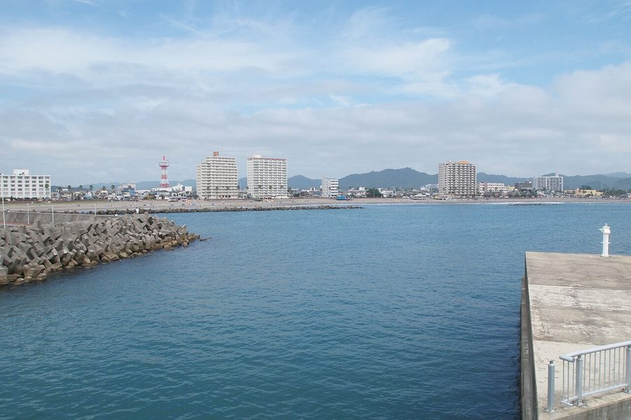
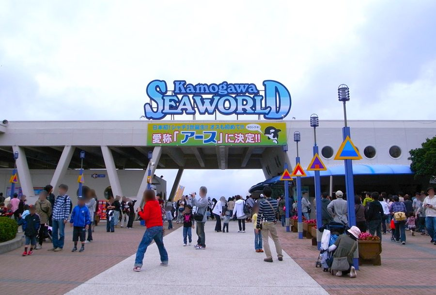
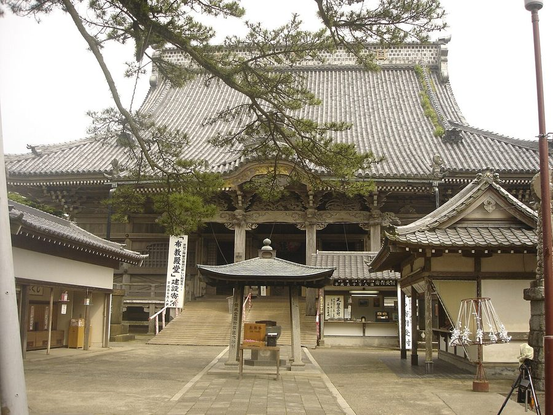
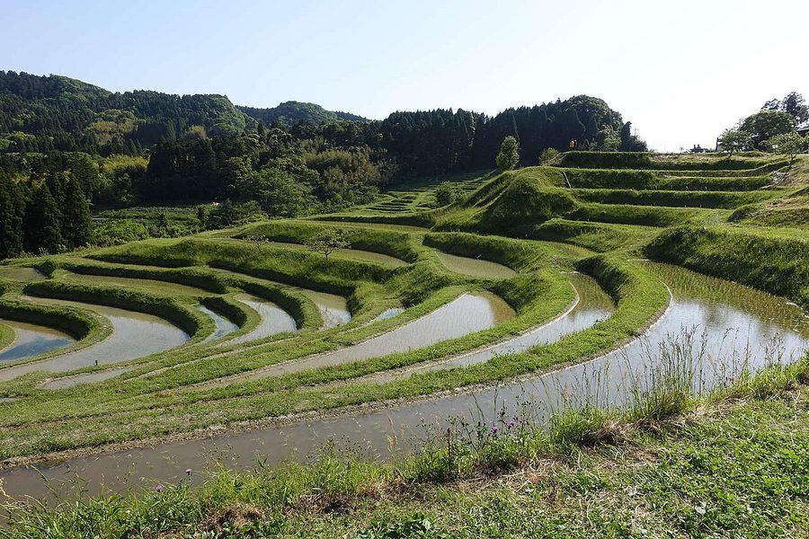

千葉県鴨川市の日帰り温泉・銭湯・サウナ（16件）
寄り道スポット検索アプリ「ヨッテコ」の収録データから、千葉県鴨川市の日帰り温泉・銭湯・サウナを営業時間・料金つきで一覧にしました（2026年8月時点）。
最も安いのは亀の井ホテル 鴨川（1,000円）。最も遅くまで入れるのは小湊温泉 実入の湯 豊明殿（23:00まで）。朝風呂なら海辺の宿 恵比寿（8:00開店）。
千葉県鴨川市はどんなまち？
数字で見る🔍千葉県鴨川市
まちの横顔




- 地形と気候: 市域の北部には房総丘陵が広がり、愛宕山や清澄山などの山々を抱えています。沿岸部は南房総国定公園に指定され、南海トラフ巨大地震の際には市域に最大6メートルの津波が到達すると予想されています。気候はケッペンの気候区分で温暖湿潤気候（Cfa）に属し、年平均気温は16.1℃、真冬日は年間を通じて0.0日です。
- 観光: 日蓮ゆかりの誕生寺・清澄寺の門前町として栄え、鴨川シーワールドや鴨川温泉郷で知られるリゾート地です。江見地区には仁右衛門島や太海フラワーセンターといった観光施設があり、花作りも盛んです。国の特別天然記念物・鯛の浦タイ生息地や、日本の棚田百選に認定された大山千枚田など、自然を生かした名所も見られます。
- 特産と文化: 西部の長狭地区には長狭平野が広がり、稲作が盛んな米どころです。嶺岡山地付近には日本初の酪農牧場とされる嶺岡牧場があったことから酪農も盛んで、大正時代には明治乳業（現・明治）の源流企業がここで設立されました。沿岸部では漁業も盛んに行われています。
寄り道充実度（全国偏差値）
偏差値・順位は、ヨッテコ収録データ（2026年8月時点・26,033件）を市区町村別に集計した施設数の全国分布（1,728市区町村）から毎回算出しています。カードを押すとカテゴリ別の分析に切り替わります。
日帰り温泉から見た千葉県鴨川市
露天風呂がある店は69%、全国水準（46%）の1.5倍。——何軒あるかより、どんな湯かで語れるまち。
- 69%の店に露天風呂があります。全国水準は46%です。北部に房総丘陵と清澄山を抱える市。69%という数字が、外で湯に浸かるまちであることを示しています。
- 88%の店が天然温泉です。全国水準は67%です。日蓮ゆかりの誕生寺・清澄寺の門前町として栄え、鴨川温泉郷で知られるリゾート地。88%が天然温泉という構成は、地下から湧くものの豊かさを映しています。
- 31%——サウナの併設率は、全国の52%に届きません。サウナの有無で選ぶなら、先に確認しておきたい数字です。
- 21時以降も営業する店は25%で、全国水準（40%）を下回ります。立ち寄るなら日のあるうちに、と考えておくのが良さそうです。
- 11件で確認できた入浴料の中央値は2,200円。全国水準（650円）との差は238%です。予算を見ておくなら、2,200円を目安にできます。
出典: 施設データ=ヨッテコ収録データ（26,033件・2026年8月時点）。偏差値・全国順位・全国水準は全1,728市区町村の分布から毎回算出。 / 人口=総務省「住民基本台帳に基づく人口、人口動態及び世帯数」（2026年1月1日現在） / 面積=国土地理院「全国都道府県市区町村別面積調」（2026年4月1日時点） / 森林率=農林水産省「2025年農林業センサス（農山村地域調査）」市区町村別林野率（2025年、林野率（林野面積÷総土地面積）） / 年平均気温=気象庁「平年値（1991-2020年）」。市区町村の代表点（国土交通省「大字・町丁目レベル位置参照情報」）から最も近い観測点の値 / まちの解説=日本語版Wikipedia「鴨川市」（https://ja.wikipedia.org/wiki/鴨川市、2026年8月21日取得、CC BY-SA 4.0） / 写真=Wikimedia Commons（各キャプションに作者・ライセンスを記載）
曜日別の営業施設数
| 月 | 火 | 水 | 木 | 金 | 土 | 日 |
|---|---|---|---|---|---|---|
| 16 | 16 | 15 | 15 | 16 | 16 | 16 |
水・木曜日が最も休みが多く（各1件が定休）、年中無休は15件です。※営業時間データのある16件で集計
入浴料金の分布（大人）
| 801〜1,200円 | 4件 | |
| 1,201円以上 | 7件 |
料金が確認できた11件で集計。
施設一覧
| 施設 | 営業時間 | 料金（大人） |
|---|---|---|
| Camp & Sauna UUSi（ウーシ） サウナ 25歳以上限定のキャンプ施設。サウナスパプロフェッショナルが厳選したパワフルな薪ストーブと天然地下水の水風呂が特徴。 | 10:00〜16:00 | 2,500円 |
| SEASIDE SURF SAUNA サウナ | 09:00〜20:30 | — |
| ピスタホテル鴨川 天然温泉露天風呂 天津小湊温泉の天然温泉。メタケイ酸を含むアルカリ性泉質で、体の芯から温まる。タワー館6階の展望浴場と本館2階の露天風呂・… | 12:00〜21:00 | — |
| 三日月シーパークホテル安房鴨川 ガーデンスパ三日月 天然温泉露天風呂サウナ 海を見ながら温泉を楽しむリゾートホテル | 10:00〜17:00 ※曜日により異なる | 2,200円 |
| 亀の井ホテル 鴨川 天然温泉露天風呂 鴨川市の海側リゾートホテル。7階展望大浴場から太平洋を一望でき、松林に囲まれた庭園大浴場も完備。 | 12:00〜19:00 ※曜日により異なる | 1,000円 |
| 南房総鴨川温泉 鴨川館 天然温泉露天風呂サウナ 南房総の海辺の温泉旅館。鴨川温泉「潮騒の湯」と「なぎさの湯」の2種類の泉質が楽しめます。露天風呂や大浴場、温泉プールが充… | 11:30〜22:00 | 4,000円 |
| 天然温泉 高鶴山荘 天然温泉露天風呂 大自然を眺めながら入る貸切展望露天岩風呂が人気。大人7人が入れるサイズで、男女別の内湯も温泉。鴨川温泉の含硫黄泉質で、美… | 10:00〜19:00 | 2,500円 |
| 小湊実入温泉 ホテルグリーンプラザ鴨川 天然温泉 小湊実入温泉の低張性弱アルカリ性泉質が特徴。美肌効果の高い塩化物泉で、古い角質層の新陳代謝を促進。館内にはガーデンプール… | 13:00〜21:00 | 1,100円 |
| 小湊温泉 実入の湯 豊明殿 天然温泉露天風呂 房総地区では珍しい自家源泉を持つ「実入の湯」。複数の趣き違う湯船で温泉巡り気分が味わえ、特に露天風呂付貸切風呂が人気。昼… | 15:00〜23:00 | — |
| 房総鴨川温泉 是空 天然温泉露天風呂 磯の斜面に寄り添く様に建つ宿。海と空を一望する貸切露天風呂が特徴で、サウナ、水風呂も完備。 | 10:00〜20:00 | 2,500円 |
| 海辺の宿 恵比寿 天然温泉露天風呂 鴨川太海の海辺の宿。源泉からタンクローリーで配湯した含硫黄泉が特徴。男湯「恵比寿の湯」と女湯「香指の湯」があります。 | 08:00〜20:00 | 3,300円 |
| 潮騒リゾート鴨川 天然温泉露天風呂 鴨川市太海の海の見える露天温泉。弱アルカリ性の含硫黄泉で、肌がツルツルになると評判です。 | 14:00〜21:00 | 1,000円 |
| 画家ゆかりの宿 江澤館 天然温泉 画家ゆかりの宿。太海浜の海を一望でき、多くの画家が滞在した歴史を持つ旅館です。 | 10:00〜15:00 | — |
| 粟斗温泉 天然温泉 小さな日帰り温泉で、休憩室が広くのんびり過ごせる。里山の景色が綺麗で、2026年は露天風呂・サウナ建設予定。保護猫がいる… | 10:30〜19:00（水・木休） | — |
| 魚眠庵 マルキ本館 天然温泉露天風呂 鴨川温泉「なぎさの湯」を使った小規模高級旅館。6室だが浴槽は6つという贅沢。男女入替制で複数の湯舟が巡れます。 | 08:00〜10:00 ※曜日により異なる | 1,000円 |
| 鴨川グランドホテル 湯屋 海の回廊 天然温泉露天風呂サウナ 鴨川温泉を使った大浴場。麦飯石風呂や露天風呂など多彩な湯舟が特徴。太平洋を眺める贅沢な温泉体験ができます。 | 11:00〜22:00 ※曜日により異なる | 1,650円 |